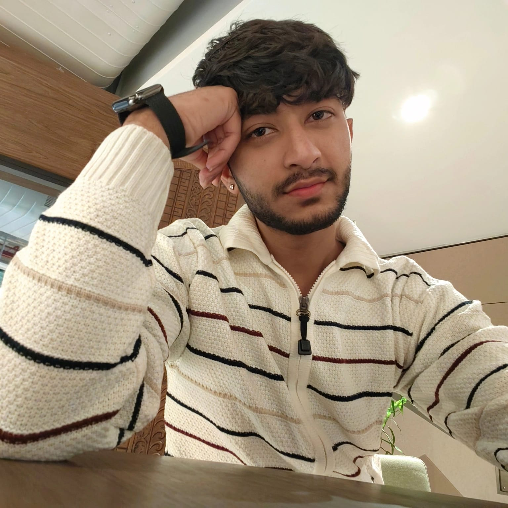

BCA Graduate | Multi-role Intern | Student Guidance Mentor
I'm Harsh, a BCA graduate and a dedicated partner in your journey toward a calmer, more confident self. I provide a safe, non-judgmental space to navigate study stress, inner critic challenges, and complex relationships. My goal is to equip you with tools for emotional resilience and strategies for academic success.
BCA Graduate; self-learned MERN stack web development and cybersecurity.
Interned as Business Executive at an Event Management company; promoted to Operations Team in 6 months. 2 years experience in EdTech, Event Management, and Relationship Consulting.
Worked across multiple roles, gaining versatile skills in business administration, operations, and consulting.
Experience in mentorship, professional guidance, and student support:
üëâ I struggled a lot working alone without guidance and now aim to help students navigate challenges confidently through SchoConnect.